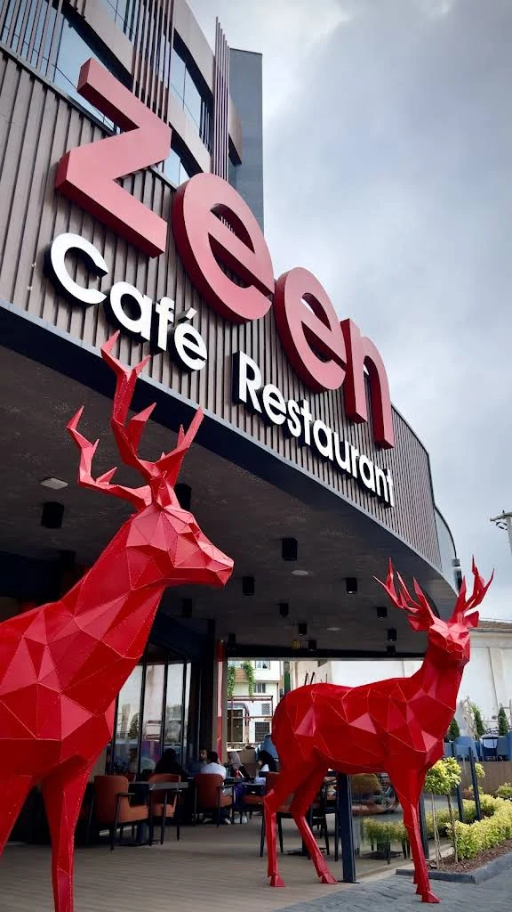
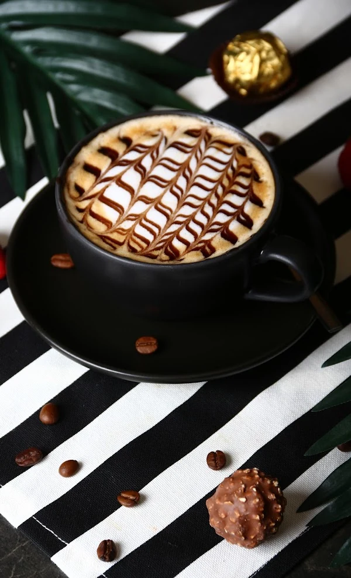
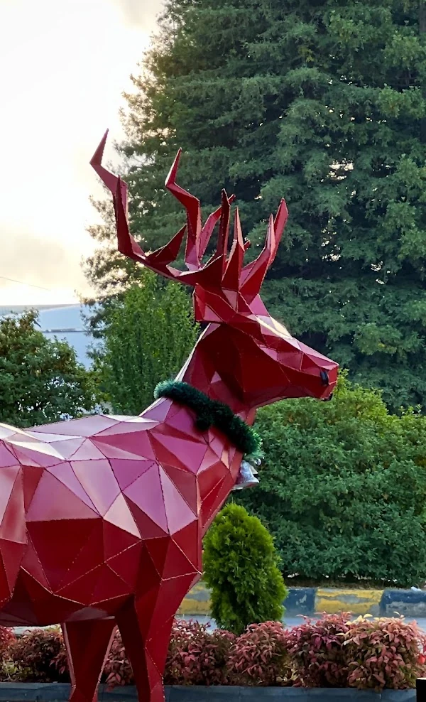
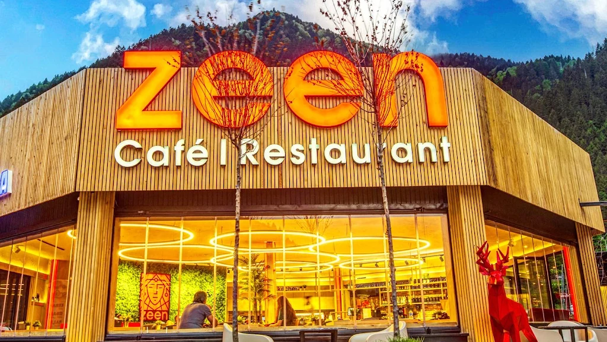

Yalıncak / Trabzon
Şehre bir mola.Zeen Premium.
İyi bir kahve, tatlı bir kaçamak, bitmesini istemediğiniz bir sohbet. Trabzon’da gününüze Zeen dokunuşu.
YALINCAK’TA, ŞEHRİN RİTMİNE BİR ARA

Şehrin buluşma noktası40° N · 39° E
ZEEN’DE OLMAK
Güzel bir buluşmanın bahanesi çok. Adresi belli.
Kahvenizi yudumlarken geçen kısa bir mola, tatlıyla uzayan bir sohbet, akşama taşınan bir buluşma. Zeen Premium, Yalıncak’ta günün tadını çıkarmak isteyenleri aynı masada buluşturuyor.
İçeri bir göz atınŞehrin içinde
Yalıncak, Trabzon
Kahve & daha fazlası
Güne keyifli bir ara
Zeen’e özgü
İç ve dış mekân
02 / SOFRAMIZDAN
Her anın
bir lezzeti var.
Kahvenin kokusu, tatlının mutluluğu. Kendinize ayırdığınız zamana eşlik eden küçük keyifler.

KAHVE MOLASI
YALINCAK · ZEEN PREMIUMTANIŞIN, BULUŞUN, BİRAZ DAHA KALIN
Şehrin içinde
iyi bir his.
Kendine özgü detaylar, sıcak bir karşılama ve keyifle uzayan sohbetler. Yalıncak’taki masanızda, günün en güzel anına yer var.
Zeen’de buluşalım03 / KADRAJIMIZDAN
Biraz mekân.
Biraz Zeen.
Güzel anlara yakından bakın.
Gerisini geldiğinizde keşfedin.
04 / SİZİ BEKLİYORUZ
Yolunuz
Zeen’e düşsün.
Zeen Premium · Yalıncak
Yalıncak, İstiklal 1 Nolu Sokak No:4B61030 Ortahisar / TrabzonGoogle Haritalar’da yol tarifi
Bilgi & rezervasyon
+90 538 654 93 36info@zeenpremium.comMasa uygunluğu ve sorularınız için ekibimize telefonla ulaşabilirsiniz.
Bizi arayın

İKİ ADRES. AYNI ZEEN RUHU.
Bir de Uzungöl’de
buluşalım.
Bir sonraki molanız göl kıyısında olsun. Uzungöl’ün doğasıyla buluşan Zeen Lounge Cafe’yi keşfedin.
Zeen Lounge Cafe’yi keşfet